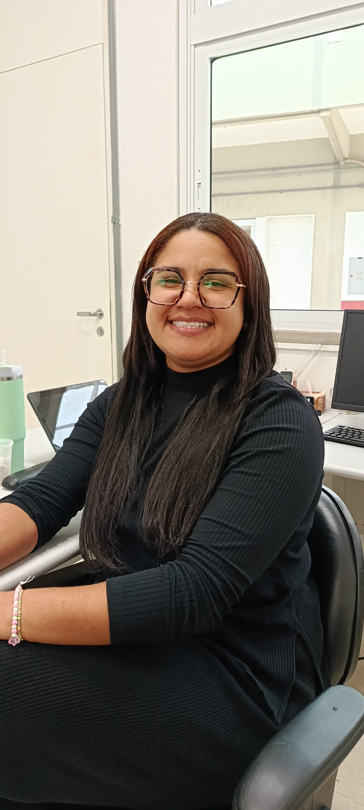

Valéria Aparecida da Silva
Minha trajetória
Valéria Aparecida da Silva é formada em Pedagogia desde 2001 e construiu sua trajetória profissional na área da educação. No início de sua carreira, trabalhou na Prefeitura de Jundiaí e, em 2003, ingressou no SESI, onde permanece até hoje. Durante 19 anos, atuou como professora alfabetizadora de primeiro e segundo ano. Depois, passou aproximadamente dois anos e meio na coordenação e, em 2025, participou do Programa Desenvolver do SESI, realizando seis meses de treinamento em oito escolas do estado de São Paulo para se preparar para atuar na direção. Em janeiro de 2026, iniciou seu trabalho como diretora da unidade SESI de Vinhedo. Ao longo de sua trajetória, Valéria enfrentou o desafio de acompanhar as mudanças na forma como os estudantes aprendem. Ela destaca que a maneira de ensinar em 2003 é muito diferente da atual, principalmente por causa da evolução tecnológica. Por isso, considera fundamental estar sempre aprendendo e se atualizando para acompanhar as novas necessidades dos alunos. Uma de suas maiores conquistas profissionais é ter chegado à direção de uma escola, posição que desejava alcançar em sua carreira como pedagoga. Para ela, essa conquista representa o resultado de muitos anos de trabalho, dedicação, esforço e perseverança. Valéria afirma que o que mais gosta em seu trabalho é cuidar das pessoas, tanto dos alunos quanto dos colaboradores. Essa preocupação com as pessoas também representa uma de suas principais contribuições para a instituição, pois busca promover um ambiente em que todos possam se desenvolver e trabalhar da melhor maneira possível. Para ela, trabalhar com educação significa contribuir para a formação das pessoas e, consequentemente, para a construção de um mundo melhor. Valéria acredita que a educação transforma o mundo, mesmo que seja aos poucos, como um “trabalho de formiguinha”. Sua trajetória também foi marcada por momentos de dificuldade. Em determinado período, chegou a sentir que não servia para estar no SESI. Porém, com o apoio de pessoas que acreditaram nela, conseguiu superar essa fase e continuar avançando profissionalmente. Valéria deixa como mensagem para outras mulheres que estão construindo suas trajetórias: não desistir. Ela destaca a importância de buscar os objetivos, se empenhar e se esforçar, mesmo quando surgirem dificuldades ou pessoas que tentem atrapalhar o caminho. Sua história representa perseverança, dedicação, cuidado com as pessoas e compromisso com a educação. Depois de anos atuando em diferentes funções, Valéria alcançou uma posição de liderança sem abrir mão de seus valores e reconhece a importância das pessoas que estiveram ao seu lado durante essa caminhada. Hoje, ela demonstra orgulho de onde chegou e do trabalho que realiza. Sua trajetória mostra que dificuldades podem fazer parte do caminho, mas também podem ser superadas com esforço, apoio e determinação.

Carla
Minha trajetória
Carla, 38 anos, é pedagoga, mestre em Educação Matemática e atualmente trabalha na coordenação pedagógica do SESI de Vinhedo. Ela cresceu em uma realidade difícil e teve uma educação básica com muitas dificuldades. Sua mãe sempre a incentivou a estudar e a ter discernimento para fazer boas escolhas. Uma professora de Matemática, Solange, despertou seu interesse pela área. Na faculdade de Pedagogia, Carla teve dificuldades por não ter uma boa base, mas encontrou professoras que a incentivaram, principalmente Dair. Ela entrou em grupos de pesquisa, fez iniciação científica e começou a se especializar em Educação Matemática. Depois, entrou no SESI como estagiária e, por sua dedicação e pesquisa, tornou-se professora efetiva. Enfrentou preconceito e críticas, mas desenvolveu uma metodologia mais prática e investigativa para ensinar Matemática. Com o tempo, ganhou reconhecimento, passou a formar outros professores e foi convidada a produzir materiais didáticos de Matemática para os anos iniciais e para o EJA. Hoje, ela trabalha para ampliar seu impacto na educação, atuando também com pesquisa e formação de professores. Sua pesquisa sobre ensino de Álgebra nos anos iniciais tornou-se referência na área.

Thayanne
Minha trajetória
Tayane trabalha há dois anos e meio na instituição como assistente administrativa, no setor administrativo, na secretaria. Antes de chegar ao SESI, ela sempre trabalhou no setor financeiro e, quando se mudou do Rio de Janeiro para São Paulo, participou do processo seletivo da instituição e conseguiu a oportunidade de trabalhar na escola. Ao falar sobre sua trajetória, conta que sua mãe é sua maior inspiração e que um dos maiores desafios de sua vida pessoal foi se tornar mãe, algo que, segundo ela, é bem complicado. Sobre seu trabalho, Tayane explica que seu setor é responsável por toda a administração da escola e por contribuir para o bem-estar dos alunos. A secretaria também participa de atividades como matrículas, históricos escolares e compras, além de ter um papel importante na comunicação entre a escola e as famílias. Ela destaca que muitas dessas responsabilidades passam despercebidas pelos estudantes, que geralmente só veem a equipe através do vidro, sem perceber tudo o que acontece nos bastidores. Como ela mesma explica: "A gente está por trás de muitas coisas, matrículas, históricos, compras, tudo para o bem-estar de vocês". Para Tayane, trabalhar com educação significa muito, principalmente pela oportunidade de acompanhar o crescimento e o desenvolvimento educacional dos alunos. Uma das coisas mais bonitas que ela presencia na escola é ver os estudantes despertarem para os estudos, desenvolverem suas habilidades e se descobrirem ao longo dos anos. Ela conta que, às vezes, um aluno não leva os estudos tão a sério no início, mas, com o tempo, começa a desenvolver suas capacidades e a encontrar seus próprios caminhos. É justamente a possibilidade de contribuir para a vida de cada pessoa da comunidade escolar que a mantém motivada, mesmo nos dias mais difíceis. Tayane também destaca a importância de reconhecer o trabalho das mulheres no ambiente escolar e acredita que a força de ser mulher está relacionada às conquistas das mulheres ao longo dos anos e à possibilidade de mostrar que elas podem ocupar qualquer lugar na sociedade, independentemente do gênero. Sua história e suas palavras mostram a importância de valorizar não apenas o trabalho que aparece, mas também aquele que acontece nos bastidores e que contribui diariamente para o funcionamento da escola, o bem-estar dos alunos e a relação com as famílias.